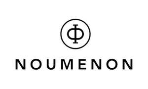

Trade Mark Journal No.2025/018 2 May 2025
UK00004177376 21 March 2025 (14,35)

- Class 14
- Jewellery; Precious stones; Agates; Amulets; Ankle bracelets; Piercings; Body jewellery; Artificial gemstones; Artificial jewellery; Bangles; Beads for making jewellery; Body-piercing rings and studs; Boxes made of precious metals; Bracelets; Broches; Cases adapted to contain items of jewellery; Jewellery charms; Clip earrings; Tie clips; Costume jewellery; Cufflinks; Chains; Pearls; Glass jewellery; Cultured pearls; Diamonds; Cut diamonds; Decorative pins made of precious metals; Earrings; Gems and gemstones; Gold and its alloys; Jades; Jewellery boxes and cases; Jewellery cases and caskets made of precious metals; Jewellery in the form of beads; Jewellery incorporating diamonds; Jewellery incorporating pearls; Jewellery made from gold, bronze, and/or silver; Fancy key rings made of precious metals; Key charms; Key chains; Key rings; Key fobs; Fashion leather goods, namely key chains and key fobs; Lapel pins, namely decorative lapel pins made of precious metals; Necklaces; Jewellery ornaments; Pendants; Rings; Wedding rings and bands; Jewellery made from ruby and sapphires; Silver jewellery; Tiaras.
- Class 35
- Retail services in relation to metal dog tags, non-metal dog tags, plastic identification tags, metal identification tags, sew-on tags, metal dispensers for dog waste bags, and cat/dog flaps made of metal and/or masonry; Retail services in relation to animal products, namely housing, bedding, dog kennels, dog houses, animal crates (dog and cat), dog beds, baskets, portable beds, crate lining cushions, cushions, and soft furnishings; Retail services in relation to medicated makeup, pharmaceutical and medicated preparations for skincare, dermatological purposes, and therapeutic use, which would encompass medical makeup designed to treat and/or benefit different skin conditions; Organisation of fashion shows for commercial and promotional purposes; Organisation of fashion parades for sales promotion purposes; Promoting sale of fashion goods through promotional articles in magazines; Retail services in relation to film products, namely merchandise (apparel, collectibles, home décor, toys, games, media, literature, and fan gear); Retail services in relation to clothing and clothing accessories; Retail services in relation to food and beverages; Retail services in relation to animal food and treats; Retail services in relation to animal toys; Retail services in relation to home décor and furniture; Business collaborations and partnerships; Facilitating and managing business collaborations, joint venues, and strategic partnerships, namely through negotiations and coordination between companies and/or individuals; Collaborative marketing campaigns; Talent management and representation; Managing and representing talents, namely actors, musicians, athletes, models, and other professionals by negotiating contracts, securing engagements, and handling career development; Retail services in relation to clothing, footwear, and headgear for men, women, and children, namely shirts, pants, dresses, jackets, hats, and shoes; Retail services in relation to fashion accessories, namely scarves, belts, gloves, and jewellery; Retail services in relation to merchandise, namely clothing, apparel, hats, scarves, bags, costumes, accessories (pins, badges, stickers, key chains, lanyards, phone cases, chargers, and headphones), and souvenirs (headbands, wristbands, pens, pencils, notebooks, mugs, coasters, water bottles, towels, blankets, necklaces, earrings, magnets, and patches [iron-on and sew-on]); Conducting campaigns to raise awareness about charitable causes, namely public speaking engagements, media outreach, and advocacy activities; Booking and scheduling, namely business appointments, corporate events, promotional events, business meetings, and conferences; Coordinating and managing the booking and scheduling of talents for events, performances, appearances, and other professional engagements; Developing and executing marketing strategies for talents, namely public relations, social media promotion, and brand management; Career advice, contract negotiation, and marketing; Developing and executing marketing campaigns that involve multiple parties and/or brands working together to promote products and services; Partnership promotion; Providing promotional services for collaborations between businesses, namely co-branded initiatives, cross-promotions, and joint events; Providing artist representation and management services, namely promoting artists’ work, negotiating contracts, and organising exhibitions for represented artists; Marketing and promotion of gallery exhibitions, art shows, and featured artists, namely through social media promotion, event promotion, and advertising campaigns; Auction services; Providing auction services for the sale of artwork either in person at gallery or museum events, and/or through online platforms; Retail services in relation to pet clothing and accessories, namely collars, leashes, bags, beds, bowls, feeders, grooming accessories, interactive pet toys, chew toys, plush toys, and pet travel items; Retail services in relation to pet fashion products, namely costumes, bow ties, scarves, bandanas, gowns, special occasion attire, holiday outfits, and apparel; Pet fashion marketing and promotion; Advertising, promotion, and marketing services for pet fashion brands, namely digital marketing, influencer collaborations, and social media campaigns focused on pet fashion trends; Wholesale services in relation to distribution of pet fashion products to pet boutiques, department stores, and online retailers; Book promotion and marketing; Offering marketing and promotional services, namely digital marketing, social media campaigns, and advertising; Providing promotional and advertising services for books, namely book launches, author branding, and marketing campaigns; Retail services in relation to books and publications; Retail services in relation to animal products; Advertising and marketing services related to music, namely promoting artists, albums, and music events; Business management and administration services for music artists and bands; Providing promotional services, namely digital marketing, event promotions, sponsorships, and social media campaigns to attract participants and audiences; Vendor and exhibitor management; Management services related to vendors, exhibitors, and sponsors, namely booth rental and event promotion; Online retail services in relation to animal clothing, animal apparel, animal footwear, animal jewellery, and animal accessories (collars, leashes, harnesses, muzzles, pet carriers, leash holders, collar charms, decorative tags, poop bag dispensers, pet travel bags, and totes); Retail services in relation to photo albums; Advertising and marketing services related to audio content and podcasts, namely promotional activities and campaigns; Podcast promotion; Promoting and marketing podcasts through various media channels; Online retail services in relation to animal products; Retail services in relation to animal collars, animal leads, animal bandanas, animal toys, animal food, animal treats, and chews; Advertising services; Promotion of theatre productions; Advertising and marketing services for theatre performances, festivals, and events, namely digital marketing, social media campaigns, and promotional content; Artist representation and management; Managing and promoting actors, directors, artists, and other creative industries professionals; Business administration; Office functions; Bill-posting services; Rental of vending machines; Retail services in relation to clothing, footwear, costumes, special occasion wear, personalised apparel, DYI fashion kits (for making accessories and/or clothing), and accessories, namely bags, jewellery, belts, hats, headwear, scarves, wraps, socks, and hosiery; Rental of advertising time on communication media; Commercial information agencies; Publicity agencies; Import-export agencies; Updating of advertising material; Commercial administration of the licensing of the goods and services of others; Cost price analysis; Commercial and/or industrial management assistance; Business consultancy (professional -); Business management consultancy; Personnel management consultancy; Accounting services; Shop window dressing; Dissemination of advertising matter; Distribution of samples; Demonstration of goods; Business management of performing artists; Direct mail advertising; Compilation of statistics; Invoicing services; Business management of hotels; Business management of sports people; File management (computerised -); Business information; Commercial information and advice for consumers (consumer advice shop); Business investigations; Layout services for advertising purposes; Rental of advertising space; Marketing services; Rental of photocopying machines; Office machines and equipment rental; Publicity material rental; Organisation of exhibitions for commercial and/or advertising purposes; Organisation of trade fairs for commercial and/or advertising purposes; Fashion shows for promotional purposes (organisation of -); Efficiency experts; Payroll preparation; Presentation of goods on communication media (for retail purposes); Economic forecasting; Production of advertising films; Advertising and marketing; Promoting films, namely advertising campaigns, promotional events, and marketing strategies; Business management; Business management assistance; Management and administration of film productions, namely providing business consulting services related to the film industry; Sales promotion for others; Publication of publicity texts; Publicity services; Online advertising on a computer network; Advertising by mail order; Publicity columns preparation; Radio advertising; Television advertising; Compilation of information into computer databases; Business inquiries; Personnel recruitment; Advertising photography; Providing commercial photography services for advertising, marketing, and promotional purposes; Services related to marketing and promoting photographic works and/or photography business; Writing of publicity texts; Public relations; Services related to managing the public image of film productions and/or actors; Sponsorship search; Data search in computer files (for others); Fashion marketing and promotion; Advertising, promotion, and marketing services for fashion brands, designers, and products, namely digital marketing, social media campaigns, and influencer partnerships; Marketing research; Fashion consultancy; Consulting services in the field of fashion, namely trend forecasting, branding, and styling advice; Wholesale services in relation to distribution of fashion products to retailers, online retailers, department stores, and boutiques, namely clothing, footwear, accessories (bags, jewellery, belts, hats, headwear, scarves, wraps, socks, and hosiery), product showrooms, product sourcing, inventory management, advertising, and marketing; Business research; Document reproduction; Psychological testing for the selection of personnel; Arranging newspaper subscriptions for others; Arranging subscriptions to telecommunication services for others; Procurement services for others (purchasing goods and services for other businesses); Price comparison services; Business management and organisation consultancy; Business organisation consultancy; Management (advisory services for business -); Typing service; Photocopying services; Modelling for advertising and/or sales promotion; News clipping services; Relocation services for businesses; Telephone answering for unavailable subscribers; Secretarial services; Shorthand services; Outsourcing services (business assistance); Telemarketing services; Systemisation of information into computer databases; Opinion polling services; Advertising and marketing services related to magazines, namely managing and promoting magazine advertisements and subscriptions; Magazine subscription services; Providing subscription services for magazines and related publications; Tax preparation services; Accounts (drawing up statements of -); Business appraisals; Marketing studies; Transcription services; Administrative processing of purchase orders; Word processing services; Employment agency services; Auctioneering services; Auditing services; Retail services in relation to chockers; Retail services in relation to makeup bags and cases; Retail services in relation to pet accessories made from leather and imitation leather, namely collars, leashes, harnesses, pet carriers, and bags; Retail services in relation to travel accessories for pets, namely carriers, bags, and portable crates; Retail services in relation to specialty clothing, namely medical clothing, athletic wear, performance wear, adaptive clothing, fire-resistant (FR) clothing, outdoor gear, adventure gear, maternity clothing, nursing clothing, high-visibility clothing, uniforms for specialised roles, compression garments, cooling clothing, and heating clothing; Retail services in relation to leather goods, namely handbags, wallets, belts, and luggage; Retail services in relation to clothes, apparel, accessories, and footwear made from rubber and/or silicone; Retail services in relation to clothing for pets, namely sweaters, coats, costumes, shoes, accessories (collars, leashes, bandanas, scarves, neck wraps, socks, and leggings), and hats; Retail services in relation to coverings made of skins (furs); Retail services in relation to merchandise from collaborative efforts, namely co-branded apparel, accessories (handbags, optical glasses, sunglasses, duffle bags, puffer bags, fanny packs, wallets, scarves, caps, hats, shoelaces, belts, clutches, statement jewellery, socks, backpacks, and key chains), and promotional items (exclusive/limited-edition items, namely clothing articles, pet clothing articles, furniture pieces, household items, jewellery, eyewear, stationery, footwear, outdoor gear, and backpacks); Retail services in relation to luggage, bags, wallets, and other carriers; Retail services in relation to furniture, decorative articles (mirrors, wickerwork, works of art [made of wood, wax, plaster, cork, reed, cane, wicker, horn, bone, ivory, whalebone, shell, amber, mother-of-pearl, meerschaum, and substitutes for all these materials (or made of plastics)]), cushions, pillows, boxes made of wood, boxes made of plastic, jewellery cases [not of precious metals], umbrella stands, vases [not of precious metals], candelabra (candlesticks), flowerpot covers, flowerpots, household goods, goods made of textile, carpets, material for covering existing floors, curtains, stationery, office requisites, mirrors, frames, games, and playthings; Advertising in the field of mail orders; Marketing consultancy services; Business services and advice on the commercialisation of goods and services; Advertisement services; Franchising, namely consultation and assistance in business management, organisation, promotion, administration and control therefor, business management, and business assistance; Marketing assistance, research, and business analysis; Decoration of shop windows (relating to the purchase and sale of furniture, furnishings, ornaments for interior design, and houses); Retail services in relation to pet toys and playthings for pets (being non-edible chews); Consumer information in the field of pet food, pet treats, and pet toys for particular pet breeds; Retail services in relation to toy-like decorations (miniature Santa’s, elves, and other festive figures that are decorative, but also have a playful toy-like appearance); Retail services in relation to Christmas tree decorations (bubbles, tree toppers, garlands, artificial snow, tree ornaments, tinsel, and lights) and artificial Christmas trees; Retail services in relation to nail care products (nail polishes, nail hardeners, and nail removers); Retail services in relation to games; Advertising; Bill-posting; Accounting; Invoicing; Marketing; Publicity; Shorthand; Retail services in relation to cosmetics, makeup products (foundations, lipsticks, and eyeshadows), and skincare products (moisturisers, serums, and cleansers); Retail services in relation to fragrances (perfumes, colognes, and essential oils); Retail services in relation to personal care products, soaps, body washes, deodorants, and antiperspirants; Retail services in relation to oral hygiene products (toothpastes and mouthwashes); Retail services in relation to hair care products (shampoos and conditioners); Retail services in relation to hair styling products (gels, sprays, and treatments); Retail services in relation to manicure and pedicure supplies; Retail services in relation to animal care products, namely grooming products (shampoos and conditioners), cosmetic products, and fur dyes; Retail services in relation to optical products, eyewear, spectacles, optical frames, and sunglasses frames; Retail services in relation to eyewear (for humans and animals), protective lenses, safety goggles, sports glasses, and driving glasses; Retail services in relation to spectacles, contact lenses, optical lenses, colourful lenses, and accessories, namely cases, straps, chains, and pouches; Retail services in relation to mobile accessories, namely phone cases, covers, screen protectors, protective films for screens, phone holders, selfie-sticks, mounts, stands, and camera lenses for mobile phones; Retail services in relation to laptop and tablet cases, covers, and bags; Retail services in relation to bags for carrying electronic accessories; Retail services in relation to audio devices, earphones, headphones, Bluetooth headsets, and related cases; Retail services in relation to charging devices, chargers, cables, USB flash drives, USB card readers, and power banks; Retail services in relation to audio cables, loudspeakers, and plug adaptors; Retail services in relation to tech devices, computers, laptops, palmtop computers, and tablet computers; Retail services in relation to bags and holders for computers, mobile devices, and tech accessories; Retail services in relation to scientific and laboratory equipment; Retail services in relation to safety, navigation, and tracking devices; Retail services in relation to safety goggles, protective eyewear, security devices, and diving equipment; Retail services in relation to measuring, as well as monitoring, instruments and scientific research apparatus; Retail services in relation to magnets, scientific devices, and laboratory instruments; Retail services in relation to activity bands, belts, armbands, and accessories for carrying devices; Retail services in relation to timers, batteries, power adaptors, and USB sockets; Retail services in relation to spectacle lenses, pince-nez chains, spectacle frames, and related accessories; Retail services in relation to jewellery; Retail services in relation to jewellery (rings, bracelets, necklaces, bangles, earrings, pendants, and tiaras), body jewellery (piercings, body-piercing rings, and studs), wedding rings, wedding bands, costume jewellery, glass jewellery, and artificial jewellery; Retail services in relation to jewellery made from gold, silver, bronze, platinum, titanium, and their alloys; Retail services in relation to jewellery incorporating diamonds, pearls, rubies, and sapphires; Retail services in relation to jewellery charms, beads for making jewellery, ornaments, and decorative pins; Retail services in relation to precious stones and gemstones; Retail services in relation to artificial gemstones; Retail services in relation to jewellery items; Retail services in relation to jewellery boxes, cases, and caskets made from precious metals; Retail services in relation to key rings, key fobs, key chains, and key charms; Retail services in relation to cufflinks, tie clips, clip earrings, lapel pins, and chains; Retail services in relation to printed art reproductions; Retail services in relation to stationery; Retail services in relation to art etchings and fine art reproductions; Retail services in relation to bags and luggage; Retail services in relation to various types of bags, namely handbags, tote bags, overnight bags, duffle bags, all-purpose carrying bags, travel bags (suitcases, backpacks, messenger bags, and gym bags), specialised bags (cosmetic bags, sports bags, school bags, and beach bags), luggage (trunks, travelling trunks, and wheeled shopping bags), and bags for pets (carriers); Retail services in relation to pet accessories, namely collars, leashes, bandanas, scarves, neck wraps, socks, and leggings; Retail services in relation to charms for bags, charms for luggage, luggage tags, passport covers, card holders, and document holders; Retail services in relation to wallets, purses, key cases, and vanity cases; Retail services in relation to decorative accessories, namely charm bags and beauty cases; Retail services in relation to equestrian clothes, saddlery, and equestrian equipment, namely saddles, harnesses, and horse-riding gear; Retail services in relation to animal accessories (collars, leads, muzzles, and harnesses) and clothing for pets (coats, costumes, and raincoats); Retail services in relation to leather goods; Retail services in relation to fashion leather goods (leather bags, wallets, belts, and travel accessories) and leather products (leather straps, trimmings, and unworked leather); Retail services in relation to imitation leather goods and products made from leather alternatives; Retail services in relation to travel goods and accessories, namely diaper bags, changing bags, and travel cases; Retail services in relation to bags designed for specific activities, namely hiking bags, camping bags, and athletic bags; Retail services in relation to cases and holders; Retail services in relation to cases (for documents, keys, and business items, namely briefcases and attaché cases), glasses holders, phone holders, headphone holders, and music cases; Retail services in relation to umbrellas, parasols, walking sticks, alpenstocks, canes, and decorative handcuffs; Retail services in relation to cushions; Retail services in relation to various types of cushions (inflatable, bean bag, neck support, and chair cushions), specialised cushions for babies (head support and anti-roll), back support, and seat cushions (inflatable and non-medical variants); Retail services in relation to furniture items; Retail services in relation to range of seating options (chairs, armchairs, benches, love seats, and office seats), beds, bedding, mattresses, bed frames, storage solutions (chests, cabinets, and bins), garden furniture, and seasonal decorations for home décor; Retail services in relation to decorative items (for home); Retail services in relation to decorative and functional home items, namely mirrors, picture frames, works of art made from various materials (wood, plastic, glass, and metal), seasonal holiday decorations (Christmas, New Year’s, Halloween, Valentine’s day, and Easter), non-metallic household items (bins and storage solutions), toy chests, letter boxes (non-metal), newspaper/magazine display stands, and various decorative items made from materials such as cork, glass, and bone; Retail services in relation to office furniture, as well as other utilitarian items, for home and office use; Retail services in relation to mate drinking kits and utensil holders; Retail services in relation to pet grooming tools and products; Retail services in relation to grooming tools for animals and pets, namely de-shedding tools, grooming gloves, nail clippers, and nail grinders; Retail services in relation to cosmetic applicators and containers for cosmetics (cosmetic bags and cases for storage); Retail services in relation to drinking and beverage containers; Retail services in relation to figurines and works of art; Retail services in relation to decorative household art pieces; Retail services in relation to bathroom accessories, bath care products, and personal care products; Retail services in relation to toiletry cases, toothbrush cases, and toilet cases; Retail services in relation to animal care products; Retail services in relation to animal feeding and grooming products; Retail services in relation to feeding bowls, scoops, and grooming tools for pets; Retail services in relation to accessories for animal cages, namely perches and feeding troughs; Retail services in relation to fabrics, materials, and textiles; Retail services in relation to coated fabrics and coated textiles; Retail services in relation to coated fabrics, polymer-coated fabrics, and waterproof fabrics for jackets; Retail services in relation to cotton and wool fabrics; Retail services in relation to cotton fabrics (not for clothing), woollen fabrics, and loden cloth; Retail services in relation to specialty cloths, namely rubberised cloths, oil cloths, vinyl cloth, felt cloth, and taffeta; Retail services in relation to bedding products; Retail services in relation to bed covers, bed throws, bed skirts, bed canopies, bed linens, bed quilts, comforters, bed pads, and bed blankets; Retail services in relation to specialised blankets; Retail services in relation to baby blankets, swaddling blankets, travel blankets, picnic blankets, blankets for pets, lap blankets, blankets with sleeves, and hooded blankets; Retail services in relation to towels; Retail services in relation to bath towels, hand towels, beach towels, children’s towels, Turkish towels, golf towels, kitchen towels, face towels, tea towels, dish towels, and specialty towels (exercise towels, drying towels, bath wrap towels, and textile hair-drying towels); Retail services in relation to table linens; Retail services in relation to tablecloths, table runners, and cloth coasters; Retail services in relation to household linens; Retail services in relation to kitchen linens, bathroom linens, and household textile products (curtains and upholstery fabrics); Retail services in relation to cushion covers and furniture covers; Retail services in relation to furniture covers made from plastic, leather, and/or textiles; Retail services in relation to specialty fabrics; Retail services in relation to textile fabrics for various applications/uses, namely printing, upholstery, and wall hangings; Retail services in relation to disposable and decorative fabrics; Retail services in relation to disposable cloths, cloth banners, cloth flags, and doilies; Retail services in relation to clothing; Retail services in relation to dungarees, jeans, lingerie, ties, garters, panties, bras, bralettes, slips, teddies, rompers, bodysuits, corsets, bustiers, camisoles, chemises, negligees, bikinis, nightgowns, leotards, tees, activewear, loungewear, thermal wear, shapewear, undergarments (for adults and children), casual clothing, formal wear, evening wear, maternity wear, sports clothing, specialised attire (for skiing, cycling, and martial arts), swimwear, swimwear accessories, swim caps, beach cover-ups, coats, jackets, vests, trousers, skirts, shorts, dresses, evening gowns, wedding dresses, uniforms, and work clothes; Retail services in relation to clothing for infants, toddlers, and children; Retail services in relation to footwear; Retail services in relation to casual shoes, sports shoes, boots, slippers, sandals, dress shoes, sneakers, galoshes, waterproof shoes, footwear for sports, footwear for outdoor activities, ski boots, and football boots; Retail services in relation to headwear; Retail services in relation to hats, caps, beanies, visors, fashion accessories for the head, and specialised headwear (helmets for sports and protective headgear); Retail services in relation to belts, handbags, scarves, gloves, hosiery, body shapers, nipple cover pasties, body tape, and decorative cuffs; Retail services in relation to hair accessories, namely hairbands and hair coverings; Retail services in relation to swimwear, beachwear, beach clothing, and beach cover-ups; Retail services in relation to dance clothing, costumes, clothing for martial arts, thermal clothing, windproof clothing, and specialised sports attire; Retail services in relation to clothing specifically designed for infants, toddlers, and children; Retail services in relation to layettes and swaddling clothes; Retail services in relation to boys’ and girls’ clothing, namely casual, formal, and playwear; Retail services in relation to clothing made from specific materials, namely cashmere, latex, silk, and wool; Retail services in relation to disposable clothing, namely clothing made from edible fabric, paper, glass like material, and plastic; Retail services in relation to clothing design and production, namely custom and ready-to-wear garments; Retail services in relation to various merchandise pieces, namely clothing, accessories, and footwear; Retail services in relation to toys; Retail services in relation to educational toys, developmental toys, children’s toys, infant toys, plush toys, stuffed toys, soft sculpture plush toys, and toys for dogs, as well as cats; Retail services in relation to specialty toys, namely enrichment toys (for animals), snuffle mats (for animals), imitation bones (for animals), toy bakeware and cookware, toy banks, toy horns, bathtub toys, toy balls, toy tools, and toy wheelbarrows; Retail services in relation to playsets, namely toy playsets, toy dolls, doll clothing, toy flowers, toy vehicles, toy sets, and toy projectors; Retail services in relation to plush toys, stuffed toys, smart plush toys, plush dolls, plush toys with an attached comfort blankets, fluffy toys, cloth toys, interactive toys, smart toys, intelligent toys, musical toys, wind-up toys, outdoor toys, active toys, toy scooters, toy tents, sand toys, toy gliders, toy rockets, wheeled toys, themed toys, and novelty toys; Retail services in relation to toy hats, paper party hats, plastic party hats, and party favor hats; Retail services in relation to sports equipment; Retail services in relation to seasonal and holiday items; Retail services in relation to pet food; Retail services in relation to dog food, cat food, foodstuffs for animals, and foodstuffs for dogs, as well as cats; Retail services in relation to specialised pet food, raw food for dogs, raw food for cats, raw food for animals, and natural chews for animals; Retail services in relation to pet treats, pet chews, animal biscuits, animal beverages, mixed animal feed, animal feed preparations, and non-medical additives to animal foodstuffs; Retail services in relation to supplements and tonics; Retail services in relation to supplements and tonics for animals; Retail services in relation to plants and flowers; Retail services in relation to supplements and tonics; Retail services in relation to supplements and tonics for animals; Retail services in relation to plants and flowers; The bringing together, for the benefit of others, of photography and videography services, enabling customers to conveniently access and purchase those services; The bringing together, for the benefit of others, of photography retouching services, enabling customers to conveniently access and purchase those services; The bringing together, for the benefit of others, of audio services, namely audio production and editing, enabling customers to conveniently access and purchase those services; The bringing together, for the benefit of others, of film production services, enabling customers to conveniently access and purchase those services; The bringing together, for the benefit of others, of video services, namely video production and editing, enabling customers to conveniently access and purchase those services; The bringing together, for the benefit of others, of entertainment and media production services, enabling customers to conveniently access and purchase those services; The bringing together, for the benefit of others, of general media services, namely providing information, advisory, and consultancy related to film, video, photography, and multimedia, enabling customers to conveniently access and purchase those services; The bringing together, for the benefit of others, of audio and podcast production services, enabling customers to conveniently access and purchase those services; The bringing together, for the benefit of others, of television production services, namely television show and TV series productions, enabling customers to conveniently access and purchase those services; The bringing together, for the benefit of others, of charitable event consulting services, namely organising and hosting charitable events, fundraising activities, and awareness campaigns, enabling customers to conveniently access and purchase those services; The bringing together, for the benefit of others, of volunteer recruitment and scheduling services for charitable events, enabling customers to conveniently access and purchase those services; The bringing together, for the benefit of others, of music production services, namely music creation, recording, producing, and publishing, enabling customers to conveniently access and purchase those services; The bringing together, for the benefit of others, of content creation and distribution services, enabling customers to conveniently access and purchase those services; The bringing together, for the benefit of others, of fashion design services, enabling customers to conveniently access and purchase those services; The bringing together, for the benefit of others, of fashion design services, namely design of clothing, footwear, headgear, and protective clothing, enabling customers to conveniently access and purchase those services; The bringing together, for the benefit of others, of accessory and jewellery design services, namely fashion accessories, clothing accessories, and jewellery both for humans and animals, enabling customers to conveniently access and purchase those services; The bringing together, for the benefit of others, of consulting services, namely custom fashion design consulting both for human and animal clothing, as well as accessories, enabling customers to conveniently access and purchase those services; The bringing together, for the benefit of others, of plaything and toy design services, namely design services for both humans and animals, enabling customers to conveniently access and purchase those services; Retail services in relation to games, namely computer, mobile, console, card, puzzle, board, and tabletop games; The bringing together, for the benefit of others, of game design services, namely computer, mobile, console, and tabletop game design, enabling customers to conveniently access and purchase those services; The bringing together, for the benefit of others, of product design services, enabling customers to conveniently access and purchase those services; The bringing together, for the benefit of others, of technology solution services, enabling customers to conveniently access and purchase those services; The bringing together, for the benefit of others, of event management services, enabling customers to conveniently access and purchase those services; Retail services in relation to virtual goods; Retail services in relation to digital audio; Retail services in relation to digital magazines; Retail services in relation to software development, namely software solutions and mobile applications; Retail services in relation to art, as well as art conservation and restoration, namely of artwork and antiques; The bringing together, for the benefit of others, of interior design services, enabling customers to conveniently access and purchase those services; Retail services in relation to digital art, namely through digital art galleries; Retail services in relation to virtual reality experiences for events and shows; The bringing together, for the benefit of others, of educational services, enabling customers to conveniently access and purchase those services; The bringing together, for the benefit of others, of training and education services on photography technology, music technology, film technology, and various design fields, enabling customers to conveniently access and purchase those services; Retail services in relation to workshops and seminars on fashion, design, filmmaking, and music production; The bringing together, for the benefit of others, of pet fashion design services, enabling customers to conveniently access and purchase those services; The bringing together, for the benefit of others, of animal apparel design services, namely design and development of animal clothing, accessories, and fashion products, enabling customers to conveniently access and purchase those services; The bringing together, for the benefit of others, of textile and fabric design services, enabling customers to conveniently access and purchase those services; Retail services in relation to art, art books, fashion books, artist portfolios, fashion designer portfolios, printed magazines (related to exhibitions and/or specific art or fashion collections), art catalogues, exhibition brochures, promotional materials (related to museum events, gallery events, and collections), and collaborative project materials (joint reports, co-authored books, and collaborative research papers); The bringing together, for the benefit of others, of fabric and textile design services, namely producing custom fabrics for fashion use, enabling customers to conveniently access and purchase those services; The bringing together, for the benefit of others, of design and development services for theatre and performance stages, namely set design, stage technology, lighting, and sound, enabling customers to conveniently access and purchase those services; Consulting services, namely in business strategy, business operations, change management, marketing, brand strategy, digital marketing, market research, business process improvement, project management, sales strategy, sales training, and curriculum development; The bringing together, for the benefit of others, of nonprofit and charitable organisation consulting services, namely strategic planning, organisational development, and program evaluation, enabling customers to conveniently access and purchase those services; Retail services in relation to virtual clothing, namely clothing, footwear, headgear, fashion accessories, optical glasses, sunglasses, and bags to be worn in virtual worlds and/or virtual environments; Retail services in relation to virtual goods for pets, namely non-fungible tokens and software covering animal clothing, footwear, apparel, and accessories for use in the virtual online and offline worlds; Retail services in relation to artificial flowers and plants.
Viktorija Zakarauskaite